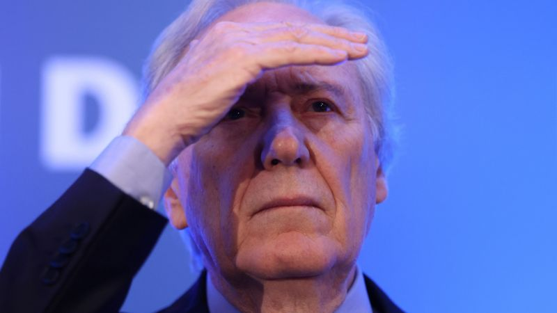

O que muda no STF e no TSE com saída de Lewandowski
Aposentadoria de Lewandowski impactará composição do STF e do TSE
Mariana Schreiber Da BBC News Brasil em BrasíliaA aposentadoria do ministro Ricardo Lewandowski nesta terça-feira (11/04) mexe com a composição do Supremo Tribunal Federal (STF) e do Tribunal Superior Eleitoral (TSE).
No caso do STF, o novo balanço de forças da Corte só ficará claro após a posse de um novo ministro, que precisa ser indicado pelo presidente Luiz Inácio Lula da Silva (PT) e aprovado pelo Senado.
A expectativa é que Lula escolha um jurista progressista na agenda de costumes e de direitos humanos e garantista na área penal. Caso isso se confirme, o futuro ministro ou ministra terá um perfil parecido com o de Lewandowski, que chegou à Corte em 2006, indicado por Lula em seu primeiro mandato presidencial.
No TSE, a aposentadoria do ministro provoca uma mudança imediata no balanço de forças da Corte. A tendência é que o ministro do STF Nunes Marques assuma sua posição, o que pode ter impacto sobre as ações contra o ex-presidente Jair Bolsonaro que tramitam na Justiça Eleitoral.